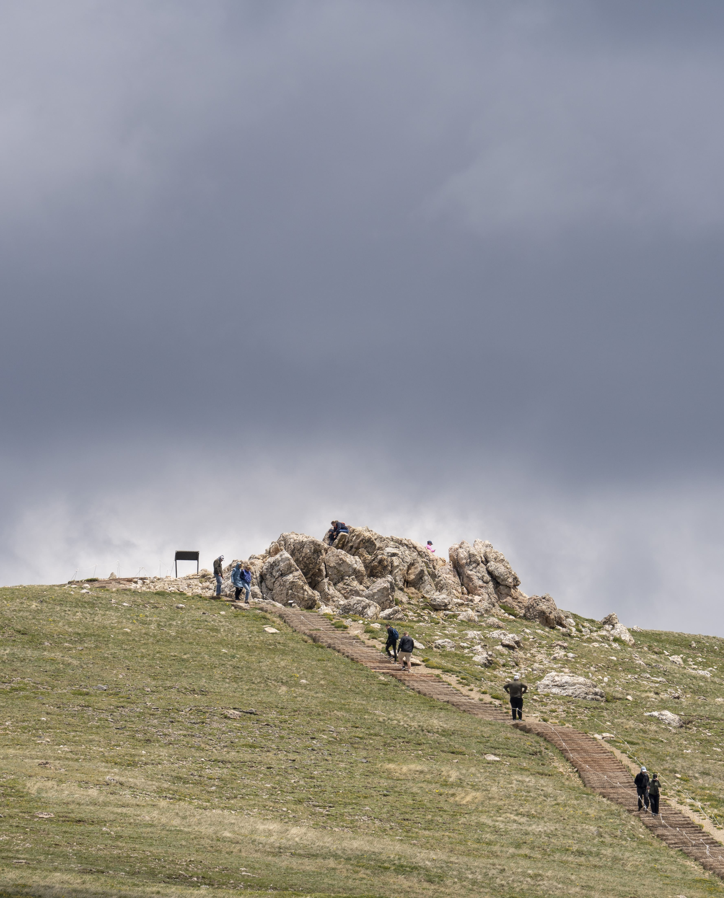
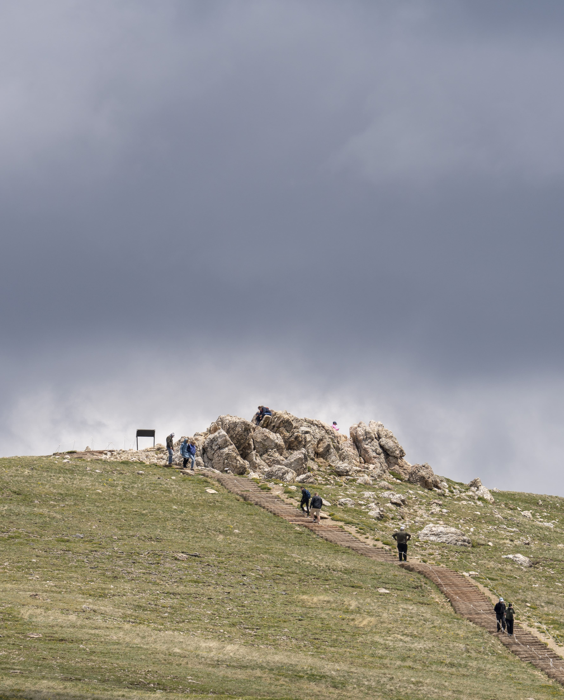

我变了，不再是之前那个一出去开会就想着到处玩，毫无听报告心思的小rookie了。可能是之前放浪形骸被老板批评，可能也是科州无车不成行的原因，虽然老顾租了车，也可以借来开开，但客随主便，总归不宜多用。
周五还是决定一起去Rocky Mountain，毕竟国家公园，可奇怪的是邀请之前去过的人往往被婉拒，去了之后才惊觉，一次就足以把其风光大致领略到。
学术方面就不在这多展开了，总体下来有两个感受吧。其一是对领域了解的更加深入，尽管我不是做某个小版块的，但是其中大概物理和整个picture已经有了；其二是我们现在做的是frontline，是大家都感兴趣的东西。
I am satisfied with my Monday’s oral, even though there are some pauses, not perfectly smooth. My scientific and logical approaches are clear stated, I spoke with passion and slowly when it came to something new to RX people, and addressed the conclusion part. Despite no immediate questions, Walsh and Yongliang Zhang came to me after the meeting, we had lovely discussions. For this year, I can know the scientific terms and basically know other people’s work, which is quite an improvement for me. When I heard the discussion about what unknowns and issues remained, it’s really glad to find that we are state-of-art, we are dealing with the challenging thing and people care about that. I think they don’t ask me just because they are not familiar with the global simulation and comparison with ionosphere.
周五的翘班是得到老板的批准的，毕竟尽管我一直没找他，但在会场的身影还是随意一瞥可见的。哎呦，现在感觉龙兄说老板龟毛是真的贴切啊。周五早起和老顾和kn一起开车前往。坦白说，路上的景色出乎意料的好，给我的惊异更甚于九十月的白山，有一望四野的草原，远处山峰白雪，旁边的沉积岩。
国家公园里主要分两部分，其一alpine visitor center可见的雄山逶迤，颇为壮丽，寒风阵阵，云卷云舒，还有旁边那山阴山阳景色迥异。群山连绵，白雪点缀，这是我在Rainer和白山没见过的景色。开车在悬崖峭壁间，所幸老顾有过经验，kn更是从江西过来，毫无惊险，我甚至还在后座睡了睡。其二的Bear lake则差了点意思，走了个3 4mile左右的trail，但最后的景色有点失望，甚至让我感觉拍到的动物是此行重点，毫不惧人的mormat和花栗鼠，还有几只飞鸟。

 
